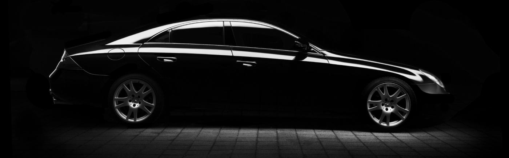
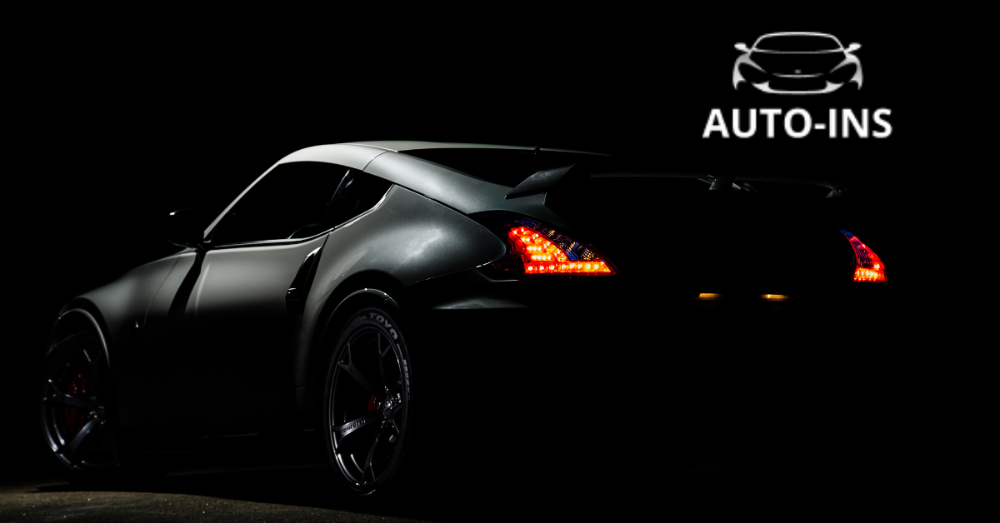

Як обрати ідеальний поліс КАСКО для вашого авто?
КАСКО - це ваш особистий щит для автомобіля, який захищає від різноманітних неприємностей на дорозі та за її межами. Проте, як зорієнтуватися у морі страхових пропозицій та обрати саме той поліс, який підійде саме вам? Давайте розберемось разом!
auto ins, автоинс, аутоинс, ауто инс, autoins, автоинс, авто инс, автоінс, авто інс, ауто інс,
Що таке КАСКО і навіщо воно потрібне?
КАСКО - це добровільний вид страхування, який покриває широкий спектр ризиків, що можуть трапитися з вашим автомобілем. На відміну від обов'язкової автоцивілки, КАСКО захищає саме ваше авто від пошкоджень або втрати внаслідок ДТП, пожежі, крадіжки, стихійного лиха та інших неприємностей.
Які види КАСКО існують?
Існує кілька видів КАСКО, які відрізняються за обсягом покриття та вартістю. Найпоширеніші з них:
-
Повне КАСКО - максимальний захист вашого авто від усіх можливих ризиків.
-
Часткове КАСКО - покриває лише окремі види ризиків, наприклад, ДТП або крадіжку.
-
Міні КАСКО - бюджетний варіант, який зазвичай покриває збитки від ДТП (з вини та без вини).
Детальніше про доступні програми КАСКО за посиланням.
Як обрати свій ідеальний поліс КАСКО?
Обираючи поліс КАСКО, важливо врахувати кілька факторів:
-
Вартість автомобіля: чим дорожчий автомобіль, тим вища буде вартість поліса.
-
Вік автомобіля: Один з основних факторів, який впливає на вартість поліса.
-
Водійський стаж: досвідчені водії сплачують меншу вартість.
-
Франшиза: це частина збитку, яку ви будете сплачувати самостійно. Чим більша франшиза, тим нижча вартість поліса. Навіть при франшизі в 1 - 2% можна вдвічі зменшити вартість страховки.
-
Покриття: оберіть той вид КАСКО, який відповідає вашим потребам та фінансовим можливостям.
Оберіть програму КАСКО та залиште завку за посиланням, наші спеціалісти дадуть відповідь на всі ваші запитання.